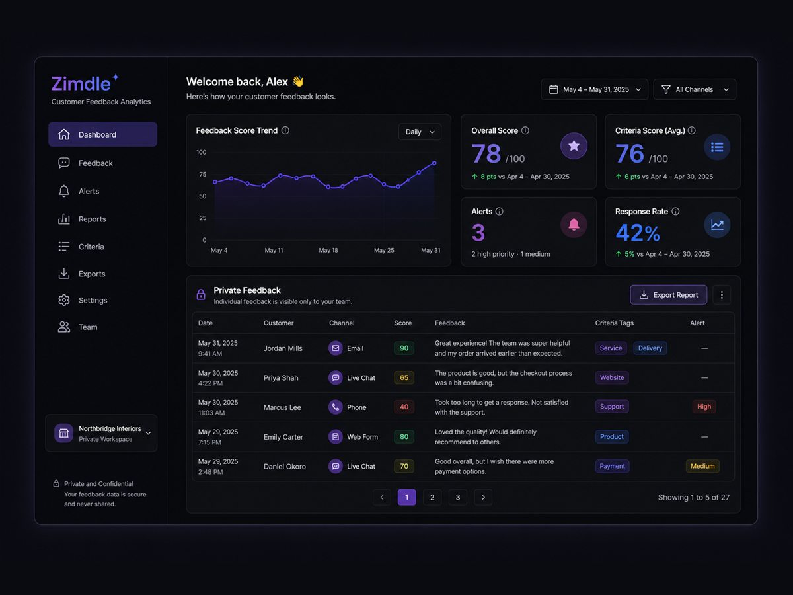
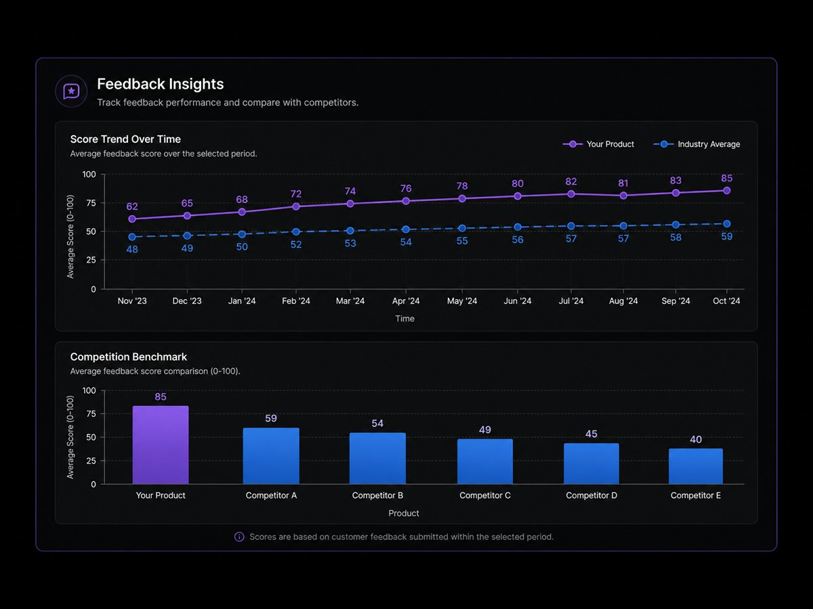
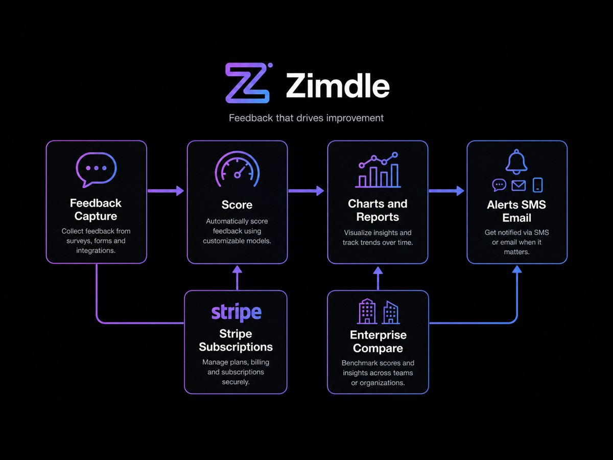

Case study · 03 · Feedback SaaS
Professional ProjectZimdle — private feedback & performance monitoring

Production project — source code private. Laravel 5.3 experience is commercially useful for legacy SaaS, subscriptions and payment work.
01 Overview
Public review sites give owners delayed, unfiltered signal. Zimdle needed structured private customer feedback and performance monitoring so owners could act on trends without waiting for social-media blowback.
02 Project Context
The local codebase is Laravel 5.3 with Stripe Cashier subscriptions, AJAX dashboard charts, DomPDF reports, Twilio SMS alerts, criteria/templates and enterprise comparison tools. Older Laravel is treated as useful production experience — not a weakness — alongside modern Laravel work elsewhere.
03 My Role
- Built a structured private feedback workflow that routes responses to the business owner and representatives.
- Implemented dashboard analytics: feedback history, criteria averages, time-period charts and competition/benchmark charts.
- Added PDF reports, email/SMS alerts for low averages, and scheduled report jobs.
- Shipped Stripe subscription plans (subscribe, change, resume, unsubscribe) gated behind subscription middleware.
- Delivered AJAX-driven UI for templates, criteria, business profiles, galleries and enterprise compare.
04 Technical Challenges
AJAX charts without a public feed
Feedback had to stay private to owners while still powering history, criteria averages, time-period trends and competition charts. Chart endpoints and the AJAX dashboard needed to aggregate scores without exposing individual responses on a public wall.
Stripe plan lifecycle
Four subscription actions — subscribe, change, resume and cancel — sit behind plan middleware. Features such as reports and enterprise compare had to remain gated when a business paused or switched plans, without breaking in-flight feedback capture.
Twilio alerts that operators can act on
Low-average scores trigger email and Twilio SMS, with scheduled PDF jobs for owners who do not live in the dashboard. The challenge was routing the right alert to the right representative without turning every score into noise.
05 What I Built
Payments
Stripe subscription plans (subscribe, change, resume, unsubscribe) gated behind subscription middleware.
Background Jobs
Scheduled PDF report jobs and low-average email/SMS alerts so owners who do not live in the dashboard still get signal.
Security
Feedback stays private to owners and representatives. Chart endpoints aggregate scores without exposing individual responses on a public wall.

Feedback loop
Verified product loop from feedback controllers, chart endpoints, DomPDF reports and Twilio alert jobs.
SaaS surface map

06 Results / Impact
Full-stack SaaS delivery across structured private feedback, analytics, reporting and operational alerts — including 4 Stripe subscription lifecycle actions (subscribe, change, resume, cancel) gated behind plan middleware.
Impact: owners get private customer signal with trend charts, PDF reports and Twilio/email alerts instead of relying only on public social reviews.
- 4 Stripe subscription lifecycle actions gated behind plan middleware.
- Private feedback routed to owners with trend charts, PDF reports and Twilio/email alerts.
- Structured private signal instead of relying only on public social reviews.
07 Screenshots
Illustrative 4:3 mockups of the feedback SaaS surfaces verified in the codebase.
08 Technology
- Stack: Laravel 5.3, JavaScript, jQuery, AJAX, Bootstrap, Sass, Git, JSON
- Integrations: Stripe Cashier, Twilio, DomPDF, c-pchart chart generation, push notifications
- Product surface: private feedback, criteria/templates, charts, PDF reports, alerts, enterprise compare
09 Links
Production project — source code private.
Need SaaS, subscriptions or payment integration?
Talk about your SaaS